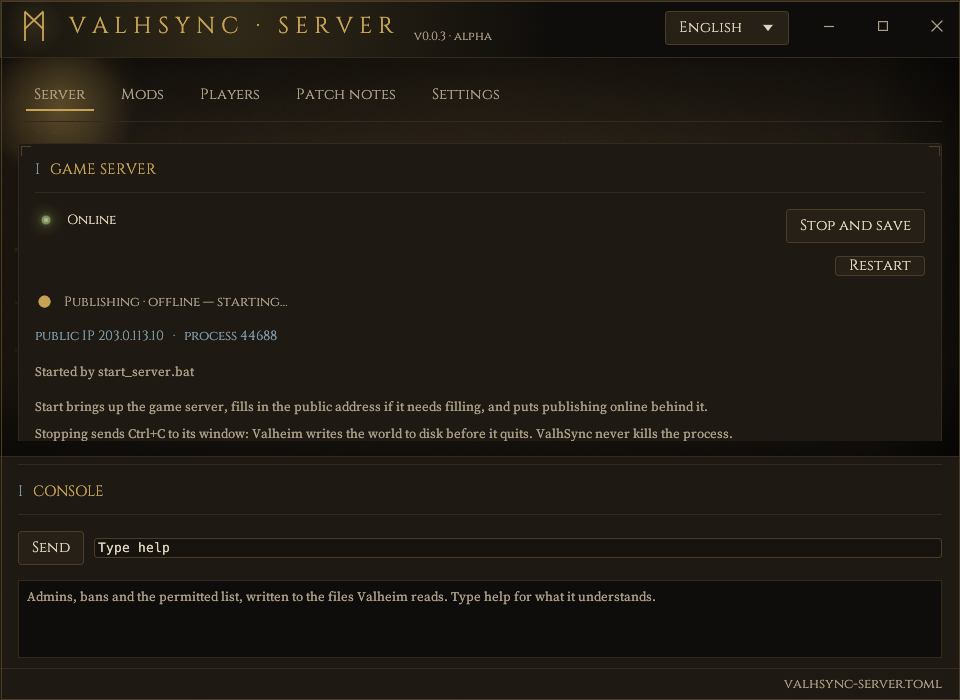
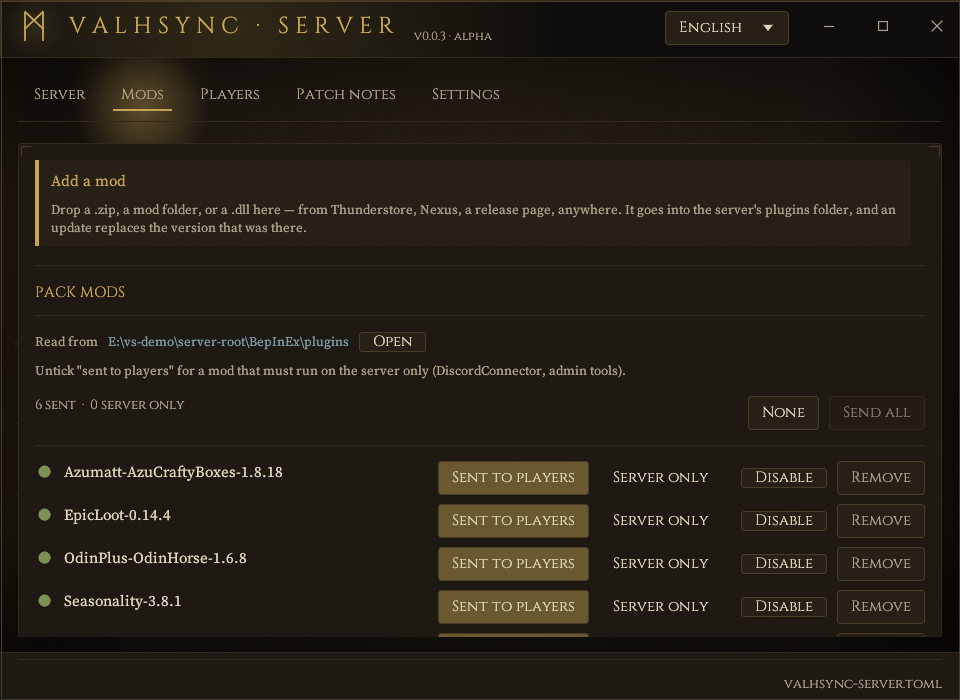
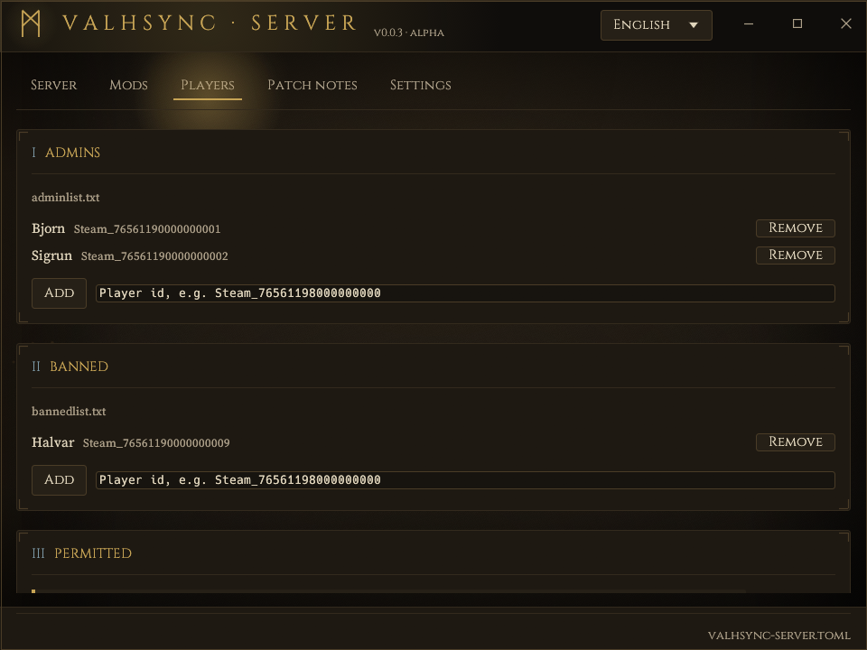
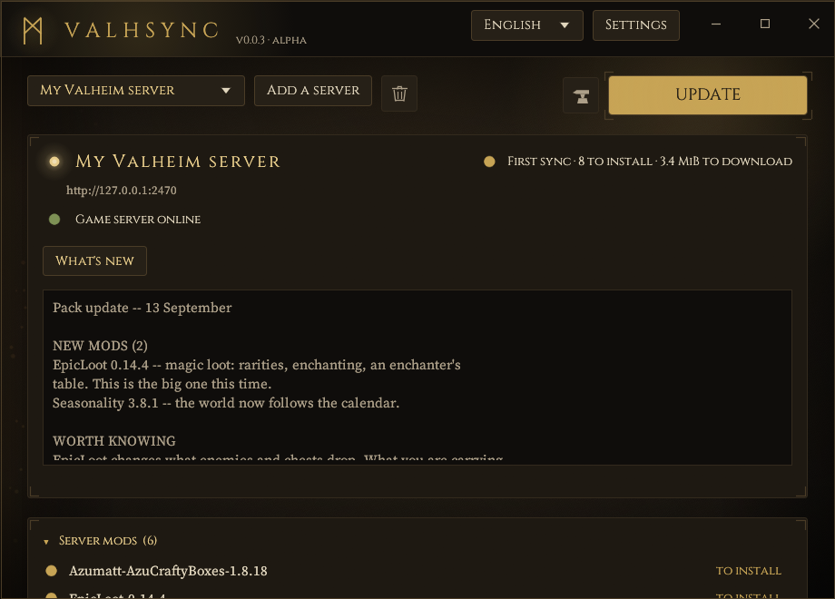

ValhSync
Run a modded Valheim server, and hand your players a launcher that keeps up with it. Two windows: yours starts and stops the dedicated server, installs and retires mods, keeps the admin and ban lists, writes the patch note and backs up the world. Theirs is one button.
Download ValhSync Windows and Linux · the admin's archive holds both programs and the guides; the player's holds the launcher and nothing else.
Source on GitHub · All releases · MIT or Apache-2.0
This is an early version. 0.0.5 is the fifth release there has ever been. One server has actually run it — a Windows machine, a dedicated server beside it, a handful of players — and the whole chain works there. Everything else is tested but has not met a real server: Linux, hosted providers, Proton, any setup that is not the one above.
So: back up the server's BepInEx folder before pointing ValhSync at one that
matters, and expect to find things. Finding them is what this stage is for — say so on the
repository when you do.
Built with AI assistance. All of it — the two programs, the tests, this documentation — was written with an AI assistant (Claude), directed and reviewed by a human. That is said here plainly because you should know what you are about to run.
§1What it is
Two programs. The first is where a modded server is run from: start and stop, install a mod by dropping it on the window, turn one off or take it out, admins and bans, the patch note, a copy of the world before a change, and the pack published signed at the end of it. The second is what the players get, and it is one button.
The reason both exist is the same one.
Valheim has no native way to distribute mods. There is no Steam Workshop for it, even in 1.0, and Iron Gate does not officially support modding: everything goes through BepInEx and third-party managers. On a modded server that breaks in several ways at once.
- The version handshake. Mods built on ServerSync or Jotunn check at connection time that the client has the same mod at the same version. If it does not, the client is dropped, and the game shows one generic message.
- Mods that refuse each other. One leftover plugin on a player's machine can stop another from loading at all, and the server rejects them for it.
- Scattered sources. Some authors publish outside Thunderstore; a manager that does not read that source hands a player a version from before the last game update.
ValhSync makes the server the single source of truth. The admin's machine already has the exact set of mods the server runs — that is what it is running. ValhSync publishes it, signed, and the launcher makes the player's game folder match before Valheim starts.
§2How it works
Server machine Player's PC
┌────────────────────────────┐ ┌──────────────────────────────┐
│ Valheim dedicated server │ │ valhsync (launcher) │
│ └ BepInEx/ (server mods) │ HTTP/TCP │ 1. GET /manifest.json + sig │
│ │ ◀─────────▶ │ 2. verify Ed25519 signature │
│ valhsync-server │ │ 3. compare with local files │
│ ├ scans the pack │ │ 4. GET /files/<blake3> │
│ ├ signs the manifest │ │ 5. apply, journalled │
│ └ content-addressed store │ │ 6. start Valheim via Steam │
└────────────────────────────┘ └──────────────────────────────┘A signed manifest
The server publishes a JSON manifest and a detached Ed25519 signature over the exact bytes. The launcher pins the server's public key when the server is added, and verifies the signature before parsing anything. A manifest that does not verify is never read.
Content-addressed files
Every file is fetched by its BLAKE3 digest and checked after download. A URL can only ever name a hash, never a path, so there is no path for a request to traverse. Nothing is written until every file has arrived and verified.
One port, and it is already open
The live publisher serves on the game's own port in TCP. Valheim uses that port in UDP only, so the router rule an admin already has covers both. ValhSync never asks for a port the game does not already use. Admins who prefer to open nothing export a static folder instead and upload it anywhere.
§3The admin's window
Run valhsync-server with no arguments and it opens a window. Four tabs.


Server
- Start, restart and stop the dedicated server. Stopping sends Ctrl+C to its console, so Valheim writes the world before it exits; the process is never killed. A server that exits without being asked to can be brought back on its own — off by default, and bounded, because the failure this exists for is also the failure that loops.
- Back up the world before a change: both halves together, beside
worlds_localand never inside it, with a warning that a copy taken while the server runs may be torn. - Players online, join code, Valheim version, public address, process id.
- Its log, followed live, and below it a resizable console holding the lines the server prints to its own — a handful among tens of thousands.
- A warning when Steam has an update waiting for the dedicated server: the game and the server are separate Steam applications, and one updating without the other refuses every connection.
Mods
- One row per mod found in the server's BepInEx folder.
- Each is either sent to players or server only: admin tools and Discord bridges have no reason to travel.
- Drop a zip from anywhere, a mod folder or a bare .dll on the window to install it; an update replaces the version that was there.
- Players may keep mods of their own, or not: one switch on that tab. Left on, a mod the pack does not contain — a map overlay, an interface tweak — is the player's business and stays where it is. Turned off, the launcher moves anything the pack does not contain into a folder inside that player's game. Either way the server is never told what anybody has installed: the answer travels inside the signed manifest and the launcher acts on it alone.

Players
Admins, bans and the permitted list, from the window or from the console's prompt:
ban <id>, unban, admin, permit,
and banned to see a list. These write the three files Iron Gate documents, which
is the only channel a dedicated server has from outside the game: it does not read its
console, whatever its start-up banner claims, and Valheim has no RCON. Kicking somebody who
is connected right now, and saving on demand, are an admin pressing F5 in the game — typing
those here says so instead of failing quietly.
Patch notes
Its own tab, published signed with the pack. The list of mods added, updated and removed writes itself from the plan, so no version number is ever retyped; what you add is the half a diff cannot produce — that a mod resets its own config, that this update only matters to the people who were crashing on the boat. Players read it before the sync if they want to, and it is still there afterwards — nothing waits on them agreeing to anything.
Announcements
A Discord webhook, and every published pack is posted to that channel with what changed and whatever the admin wrote. It is absent by default, and absent means off: ValhSync contacts no third party unless somebody pasted an address in.
Settings
Where the dedicated server lives, the name and address players see, publishing — a static folder to upload, or the live server — and the address and key fingerprint to hand out, with an invite code beside them for admins who prefer one. Everything writes itself: there is no Save button, because a setting that is on screen and not on disk is a server nobody can reach.
Publishing follows the game server. Bring the game up, however you bring it up, and the pack goes online behind it.
The window speaks eight languages — English, French, German, Spanish, Italian, Polish, Portuguese, Russian — chosen from the menu at the top right and remembered. English is the default; the language the system asks for is offered first.
The command line does all of the same things, and is what a service unit runs — which is the path on a headless Linux box. Setting the whole thing up, on either platform, is the server guide.
§4The player's launcher

One window, one button. Press Play: if anything has changed it is installed first, then Valheim starts through Steam.
ip:port that goes
into Valheim's own join box — 203.0.113.10:2456 — pasted into the launcher.
That is the ordinary way in, and the only thing a player needs from the admin. The launcher
fetches the server's key and shows its fingerprint, which is what the admin announces once
so it can be compared.
- An invite code does the same thing —
valhsync1:…, carrying the key inside it, so there is no fingerprint to compare. Handy for a file shipped beside the executable; the address is what most people will paste. Several servers can sit side by side. - Patch notes before the install, not after. Mod by mod and by name — added, updated, removed, computed from the pack itself — above whatever the admin wrote about the release. Readable before the sync and still readable after it.
- Nothing is deleted. Files that get replaced go to a backup. The last sync can be rolled back exactly. Mods the player installed themselves are left alone unless the admin asked for an exact match, and then they are set aside in a folder inside the game — moved, named, never removed, and the window says why before it happens.
- A repair pass re-verifies and re-fetches anything that no longer matches.
- Play without mods renames
winhttp.dllrather than uninstalling anything, and the next sync puts it back.
§5Updating the launcher
A server can offer players a newer ValhSync. The offer is a document signed by the same key they already pinned for the mod pack, naming a build by its BLAKE3 digest; the launcher checks the signature before reading a field of it, checks the digest before installing a byte of it, and refuses anything that is not strictly newer or not built for that machine.
The prompt names the server and its key fingerprint, because that is what the player is being asked to trust — see §6. Declining changes nothing: syncing and playing carry on, and releases can always be fetched from the repository instead.
§6Security, honestly
The full threat model is in SECURITY.md. The shape of it:
| Threat | What stops it |
|---|---|
| Manifest forged or altered in transit | Ed25519 signature over the exact bytes, verified before parsing, key pinned at import |
| File altered in transit or on the server | BLAKE3 checked after download; nothing applied until everything verifies |
| Replay of an old, validly signed manifest | The launcher remembers the newest it has seen and refuses an older one |
| Path traversal, drive letters, UNC, reserved device names | Strict syntax check plus an allow-list of roots; one bad entry rejects the whole manifest |
| Symlinks or junctions in the game folder | Never followed, checked at plan time and again at apply time |
| Names that render as something other than what they are | Control characters, bidirectional overrides and zero-width joiners all refused |
| Server-side path access through a URL | Files served by digest only, from a content-addressed store; no listing, no write route |
The transport is plain HTTP by default. Confidentiality is not a goal — mod files are
public — and integrity does not depend on the transport. An admin who wants TLS puts a reverse
proxy in front; the launcher accepts https:// and verifies certificates against
bundled roots.
Builds are not signed with a code-signing certificate yet, so Windows SmartScreen warns on first run and Defender's machine-learning classifier occasionally reports a fresh build. Release hashes are published to be checked in the meantime. A certificate has been applied for, the release workflow already submits the Windows binaries for signature, and the code signing policy says who can cause a signature to happen and what one would mean.
The 0.0.4 build was put through VirusTotal:
0 detections out of 70 for
valhsync.exe, and 0 out of 67 for the package it travels
in. That is a scan, not a proof — it is what every engine had to say on the day, and a
file nobody has seen before is exactly the case heuristics get wrong in both directions. Any
file can be checked the same way without downloading it twice: paste its SHA-256 into
VirusTotal's search box.
§7Licences
ValhSync
MIT OR Apache-2.0, at your option — the Rust ecosystem's usual pair. Both texts ship with the source and in every release archive (LICENSE-MIT, LICENSE-APACHE). Written from scratch; not a fork of any existing mod manager.
Typefaces
Both windows embed two faces, under the SIL Open Font License 1.1, whose texts travel with every release:
- Cinzel by Natanael Gama — headings, buttons and labels. A Roman inscriptional face: the closest thing to letters carved in stone.
- Source Serif 4 by Frank Grießhammer — running text and paths.
Dependencies
464 crates in the full graph, permissively licensed throughout. No GPL, AGPL or
SSPL, and nothing unlicensed. cargo deny enforces the allow-list in
deny.toml on every CI run, so this cannot drift unnoticed.
| Licence | Crates | Note |
|---|---|---|
| MIT and/or Apache-2.0 | ~360 | the overwhelming majority, most offering both |
| Unicode-3.0 | 18 | Unicode character tables |
| Zlib, BSD-2/3-Clause, ISC, BSL-1.0, 0BSD | ~25 | permissive, usually as one option among several |
| CC0-1.0, CDLA-Permissive-2.0 | 4 | public-domain dedication and permissive data licence |
| MPL-2.0 | 1 | option-ext, reached through directories. File-scoped copyleft: modifying that crate's own files means publishing those files. Linking it does not affect ValhSync's licence. |
Two crates offer MIT OR Apache-2.0 OR LGPL-2.1-or-later; the permissive option
is taken. The window toolkit bundles a fallback font of its own under OFL-1.1 and the Ubuntu
Font Licence.
§8What has been tested
Worth stating plainly, because the answer is narrower than the code's reach. One platform has been verified end to end, including across several players' own machines. Everything else either compiles and passes its tests, or is untried.
| Platform | Status |
|---|---|
| Windows 11, x86_64 | Verified end to end, in one configuration: a PC running the Valheim dedicated server (Steam app 896660) with the publisher beside it, serving on the game's port. The launcher fetched the pack over that machine's public address, applied it, and Steam started Valheim into the server. |
| Other machines as players | Verified with 0.0.1. Several players ran the launcher on their own PCs — their own Valheim installs, their own game folders, their own pre-existing mods — synced from the publisher and joined. That is the run that exercises quarantine, backups and the root allow-list against installations nobody arranged in advance. |
| This release across machines | Not yet. The multi-player run above was 0.0.1; the release notes and the update channel have only been exercised between a publisher and a launcher on one PC. |
| Linux, x86_64 | Builds and passes the suite in CI — since this repository's first run, and not before it. It used to say “on every commit”, which was not true: there was no CI until the project was published, and its first look found two things that had never compiled on Linux at all. What passes there now includes the end-to-end tests, which stand a real publisher on a real TCP listener and drive the launcher's real engine against it: a pack installed, replaced, rolled back, an older manifest refused as a replay, an update offer verified and written. What has never happened on Linux is a window being opened or Steam being asked to start the game. |
| Proton / Steam Deck | Untested. The launch-option lines the launcher shows come from the BepInEx documentation, not from a machine here. |
| Dedicated server in Docker | Untested, and partly unsupported by design: the publisher finds the game server by looking at processes, so it cannot see one in another container. Publishing a pack from a mounted volume should work; starting, stopping and the console will not. |
| Hosted servers (G-Portal, Nitrado…) | The layout has a test — publishing with no local server root, from a copy of the pack, with game_address pointed at the host — but no real hosting provider has been on the other end of it. |
| macOS | Not built, not tested. |
§9Building it
Rust stable, edition 2024. No build container, no code generation step, no vendored C.
cargo test --workspace
cargo clippy --workspace --all-targets -- -D warnings
cargo run -p valhsync-server # the admin's window
cargo run -p valhsync # the player's launcherOn Linux the window needs the usual X11/Wayland development packages. Release archives are
built by scripts/package.ps1, which passes --remap-path-prefix so no
build machine's paths travel inside the binaries, and refuses to package a build that was made
without it.
The workspace is four crates: valhsync-core (pure logic over bytes and the
local filesystem, no network, where most of the tests live), valhsync-server,
valhsync (CLI and window in one executable), and valhsync-ui (the
shared theme).